Triangle strips을 AR 토큰 단위로 승격하고, 동일 시퀀스로 tri/quad mesh와 UV chart partition을 동시에 생성하는 첫 프레임워크.
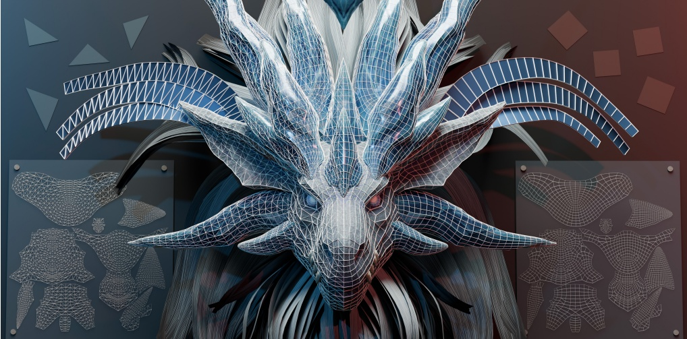
Artist mesh : 3D 작업자가 손으로 만든 mesh, edge flow가 깨끗한 quad 구조
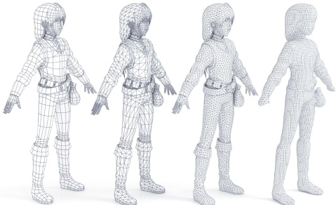
요즘 3D 생성 AI (TRELLIS · Hunyuan3D · CLAY · Wonder3D) : Marching Cubes 같은 알고리즘으로 reconstruction
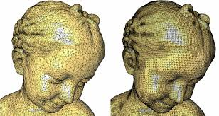
MeshGPT : triangle마다 VQ-VAE discrete token → GPT 시퀀스 예측
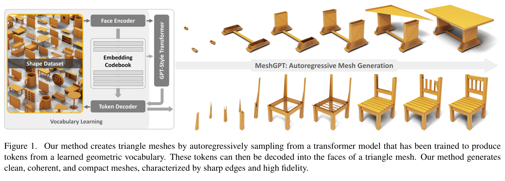
각 triangle을 VQ-VAE codebook embedding에 매핑, causal transformer가 다음 triangle 토큰을 예측. Mesh 생성을 sequence modeling으로 푼 최초 framework.
Face 수 상한이 약 800으로 복잡한 production asset은 불가. Codebook이 triangle 형태 variation을 모두 담아야 해서 scale이 어려움.
BPT : block (좌표 압축) + patchified (hub vertex fan으로 face 묶기) → 시퀀스 ~75% 단축
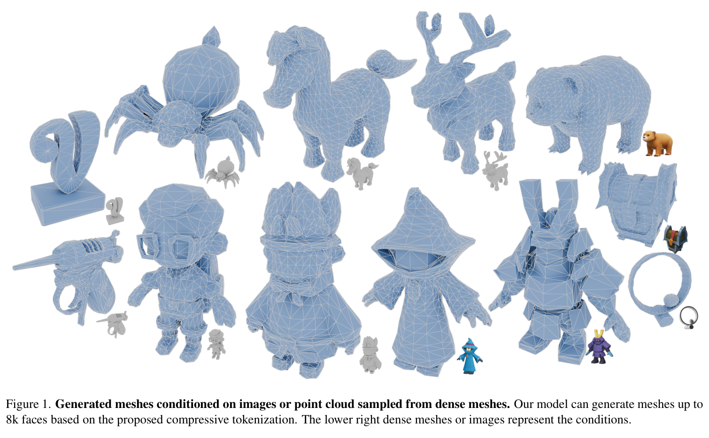
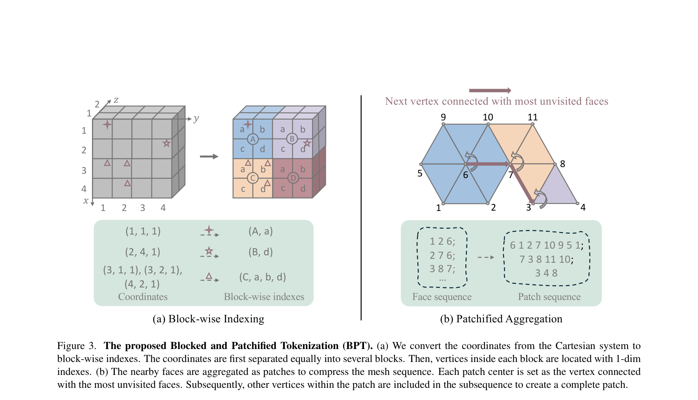
Patch 경계마다 edge flow가 끊김 — artist의 긴 결이 복원 안 됨. Vocabulary가 40,960으로 폭증.
DeepMesh : hierarchical coord + DPO로 품질 향상
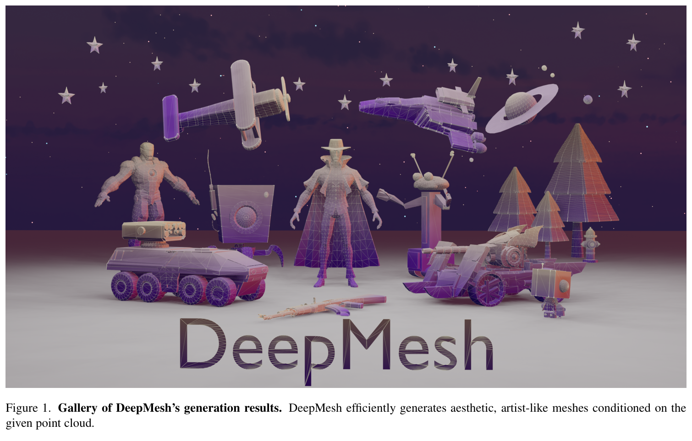
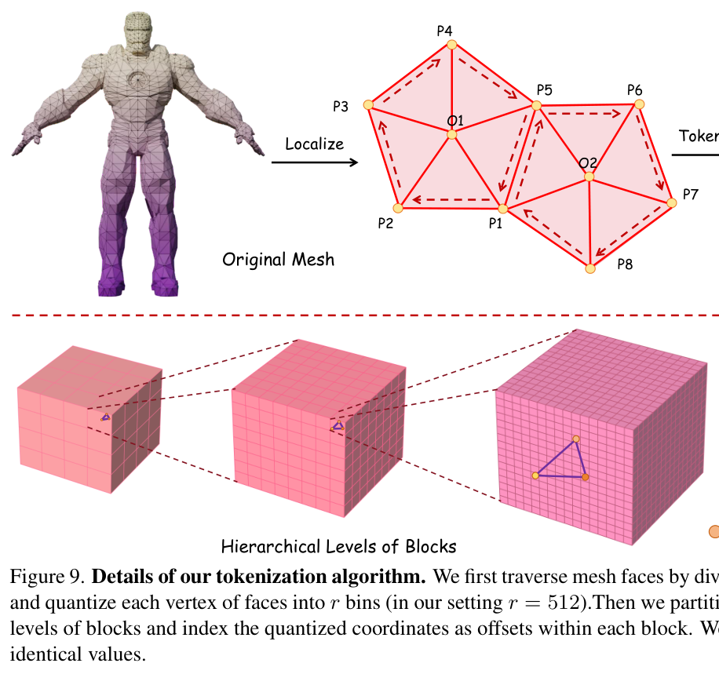
여전히 patch-based local traversal. 긴 edge flow를 하나의 chain으로 담아내지 못해 artist topology 보존에 실패.
SATO : 한 모델로 tri · quad · UV segmentation 전부 생성
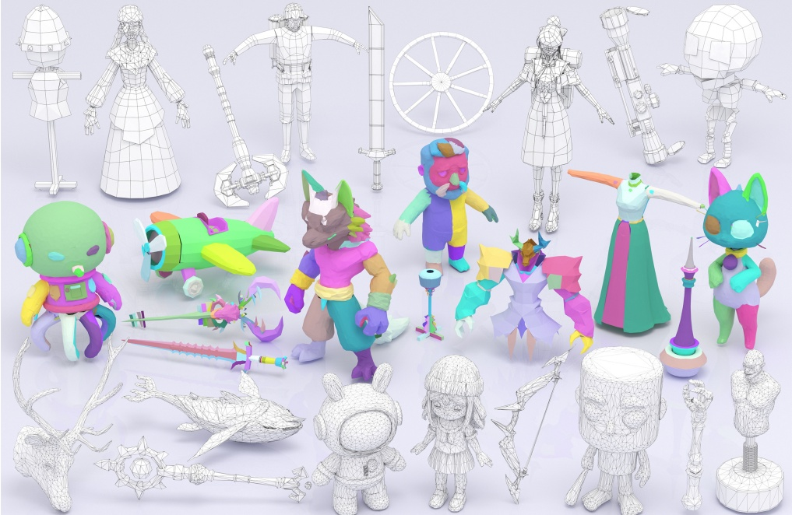
Strip : 새 face가 이전 face와 edge 공유하며 자라는 구조
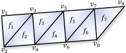
Pipeline : point cloud → encoder → hourglass transformer → stride σ
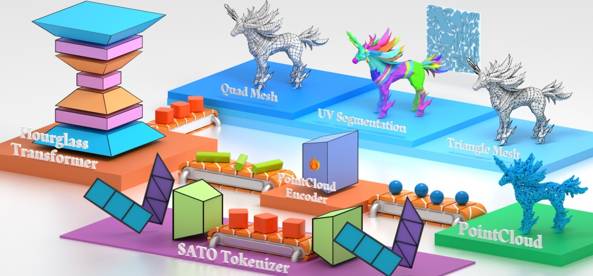
Quantization : 512³ voxel → 4³/8³/16³ 3-level, 상위 prefix 공유
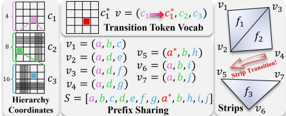
Strip extraction : lowest-coord seed → adjacency 따라 zipper처럼 grow → dead-end에서 끊기
Native UV seg : 같은 시퀀스 안에서 UV island partition
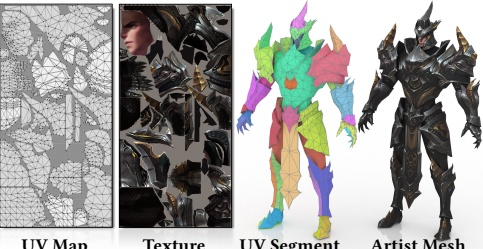
Unified tri/quad : 같은 토큰 시퀀스, σ 스위치만
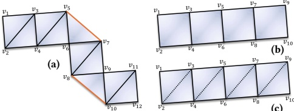
Strip vs patch : patch는 5–7 face마다 리셋, strip은 임의 길이
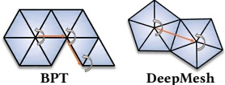
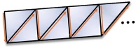
Training : tri pretrain → UV post-train → quad fine-tune
Triangle quant : 3 데이터셋 · 4 지표 모두 SOTA
| Method | ShapeNet F1↑ | Thingi10K F1↑ | Objaverse F1↑ | Objaverse NC↑ | Objaverse CD↓ |
|---|---|---|---|---|---|
| MeshAnythingV2 | 0.361 | 0.162 | 0.208 | 0.858 | 0.016 |
| TreeMeshGPT | 0.439 | 0.236 | 0.188 | 0.783 | 0.057 |
| BPT | 0.605 | 0.248 | 0.265 | 0.841 | 0.030 |
| DeepMesh | 0.532 | 0.157 | 0.240 | 0.859 | 0.020 |
| SATO (Ours) | 0.807 | 0.460 | 0.503 | 0.909 | 0.009 |
Triangle qual : clean surface · complete structure · artist-aligned edge flow
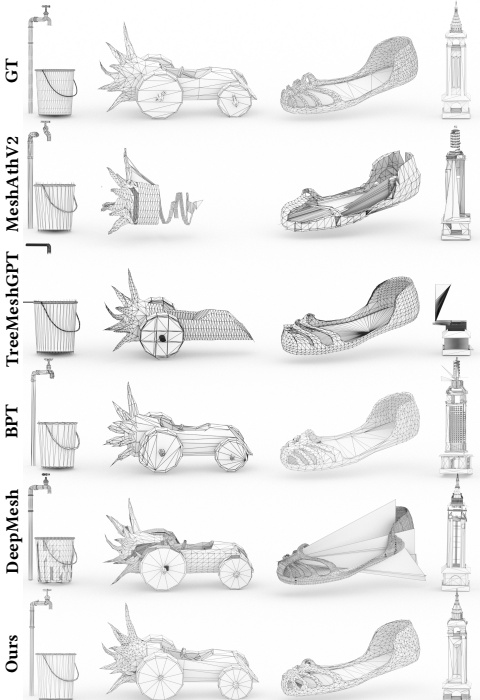
User study : artist가 실제로 선호
| Method | Score (0–3) | Variance |
|---|---|---|
| MeshAnythingV2 | 0.18 | 0.27 |
| TreeMeshGPT | 0.57 | 0.67 |
| DeepMesh | 1.17 | 0.93 |
| BPT | 1.40 | 0.95 |
| SATO (Ours) | 2.61 | 0.49 |
UV seg : 같은 Blender unwrap에서도 distortion 전 지표 개선
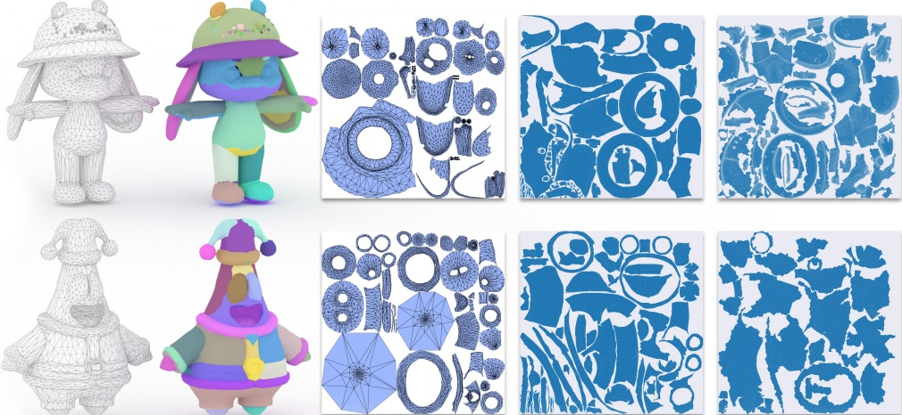
Quad : σ=2 decoding만으로 quad, 별도 모델 없음
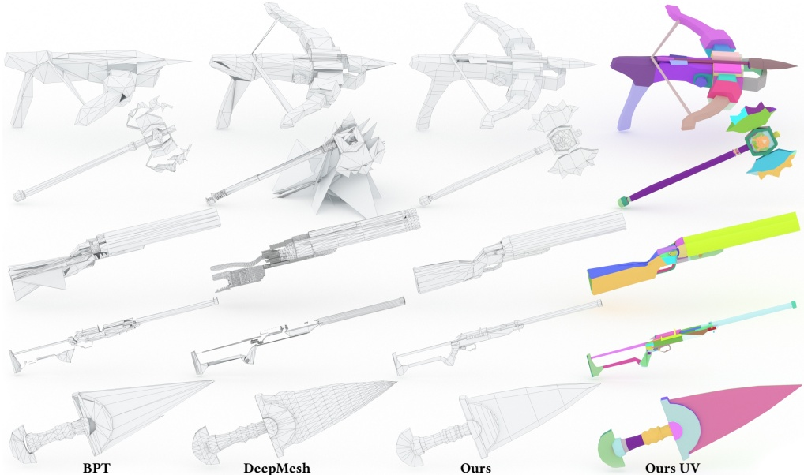
Resolution : sweet spot ~수천 face
UV island ↔ Garment panel : SATO의 face→island partition
3D mesh surface를 semantic patch로 cut-and-unwrap한 face partition 집합.
3D garment surface를 봉제 단위로 cut-and-flatten한 2D panel 집합 (CLO .zprj).
SATO의 위치 : discrete token AR 축 대표
| 특성 | SATO | Omages | DiffGI | GIMDiffusion | PatternGPT |
|---|---|---|---|---|---|
| Representation | Strip token seq | 12-ch 64×64 image | 32×32×4 TSDF+Pos | Multi-chart GIM | Sewing pattern token |
| Modeling | AR Transformer | DiT | Latent Diffusion | Collaborative Ctrl | Causal Transformer |
| UV 처리 | Sequence-native partition | UV atlas 직접 | UV chart 암시 | UV chart 암시 | N/A |
| Tri/Quad | Unified (σ) | Tri 중심 | Tri (DMS) | Tri | N/A |
| Garment 특화 | X | X | △ (thin-shell) | X | O (pattern) |
Strip token이 artist mesh AR 생성에 비어있던 mid-level 언어를 채웠다 — 그리고 그 언어는 garment에도 말할 수 있다.